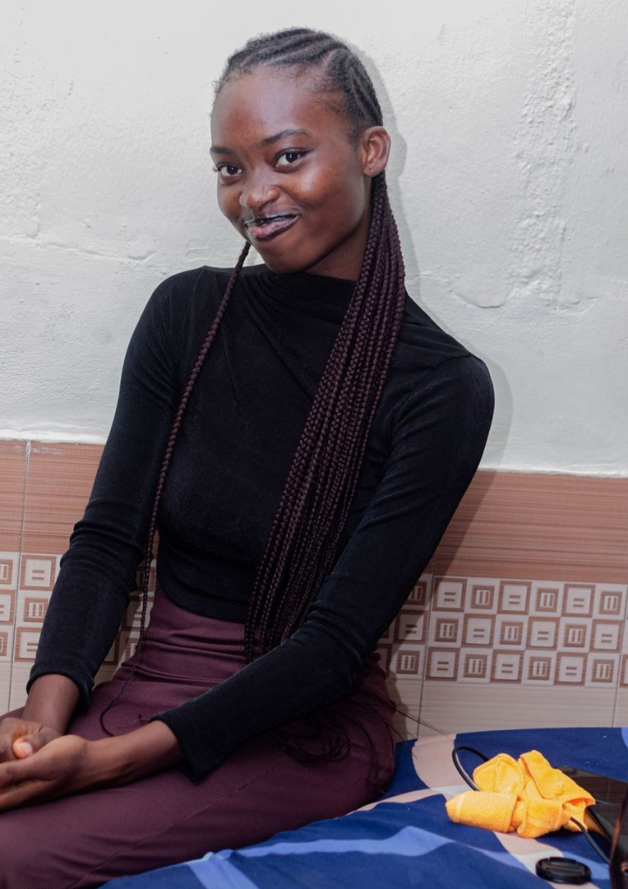
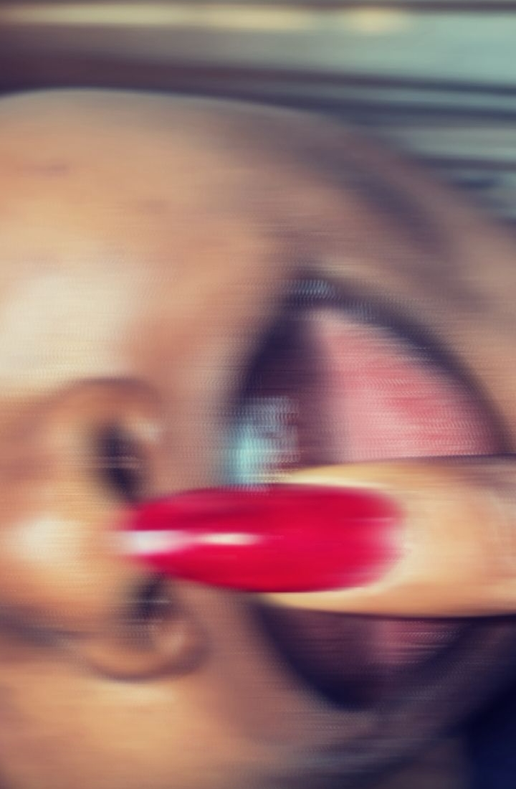
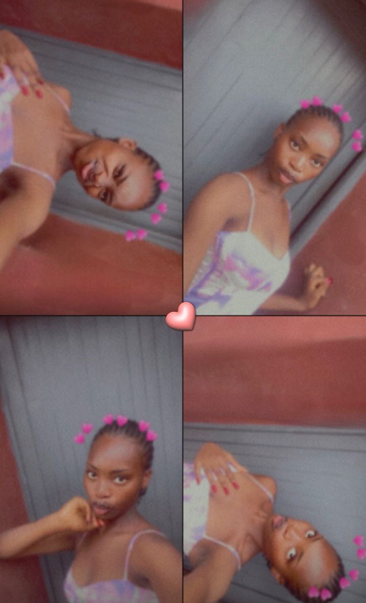
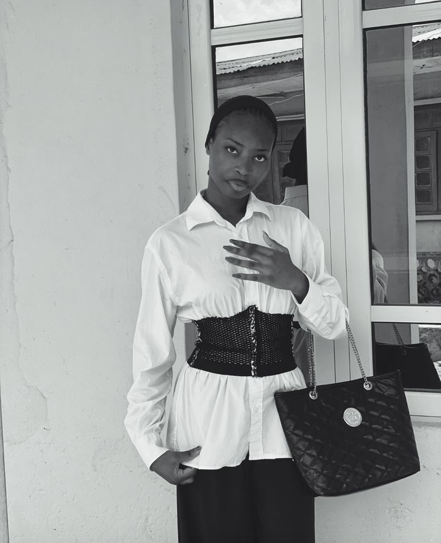
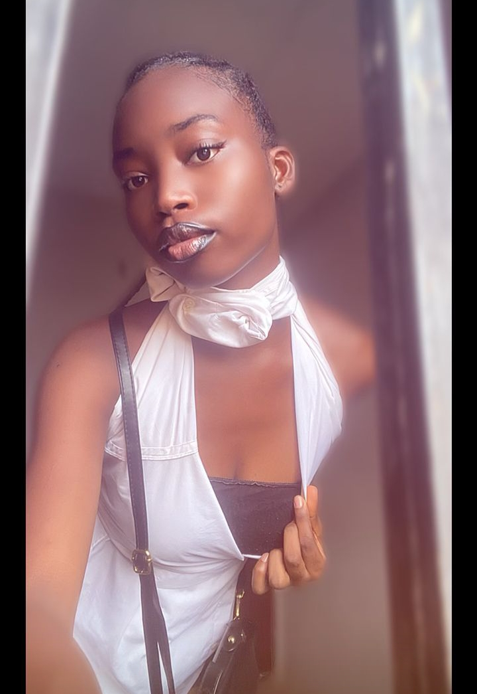

There are people who simply exist in a room, and then there are people like you who curate the very atmosphere of the space they enter. I’ve watched you, and it’s never just about the clothes or the aesthetic for you. It is a deep, expensive grace that you carry in your walk, your talk, and your silence. You don't just dress nice; you curate moments. Every outfit is a statement of confidence, and every sidewalk you step on might as well be a runway in Milan.

The Signature
But let’s talk about the most beautiful part of you: that smile. Your smile is literally a reset button. It’s soft, it’s genuine, and it’s the kind of light that doesn't need a filter. In a world that can be so loud and demanding, seeing you happy is a reminder that there is still peace and beauty to be found. It is your most powerful accessory, and it’s the one thing no other model can ever replicate.

Runway Vision
I know you have big dreams for the spotlight. I know you wish to be a model, but I need you to understand something: the world just hasn't caught up to what I already see. You don't need a professional camera or a high-fashion stage to be a muse. You are already a masterpiece in progress. Every time you pose, every time you step out with that 'rich girl' energy, you are practicing for a destiny that is already yours.

You have the discipline, the looks, and the spirit of a star. Don't ever let a quiet moment make you think your light is dimming—you are just preparing for the grand stage. Beyond the 'slay' and the perfect photos, I want you to know that I am in your corner for life. Thank you for being the person I can always turn to, the one who keeps me grounded and sane. I’m not just your friend; I’m your permanent 'paparazzi' and your loudest cheerleader.


The Vows
I vow to always be the first person to celebrate your wins. I vow to stay in your corner until we see your face on every billboard, and even then, I'll be the one in the front row. I vow to be your sanctuary when the world is too much, and to always honor the woman you are behind the lens. You are a Queen, you are a Muse, and you are my person for life.